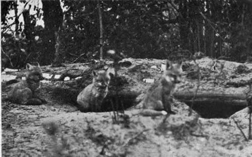
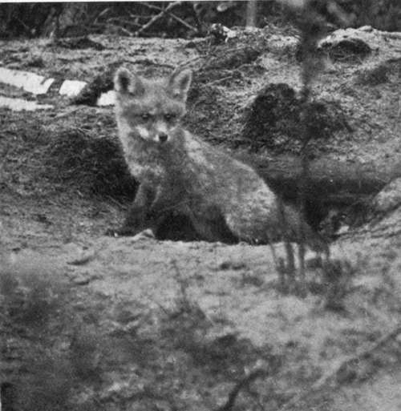

The Trapper. Part 3
Description
This section is from the book "Wild Life In Canada", by Angus Buchanan. Also available from Amazon: Wild Life in Canada.
The Trapper. Part 3
If wild-fox fur is to remain a valuable asset to Canada, digging out the young in the early spring should be made illegal by law, or limited by law to a very stringent degree. The export of live foxes is governed in a degree by the issue of permits, but these permits in 1914 were generously given, it seemed to me, and, moreover were often evaded; nor was it possible in out-of-the-way places to follow the movements of keen buyers or the extent of their purchases.
Again, in 1914, by a recent revision of the Game Act, it was unlawful to take foxes before May 15. This restriction was seldom observed north of the frontier, cubs were dug just when the dens contained them, and kept until they were wanted by the buyer. Such a state of affairs would cease if it was unlawful to dig out foxes and unlawful to buy foxes, except, perhaps, in a very limited degree, and only under Government supervision. Obviously, if it is desired to preserve a declining species of any kind, mankind must protect it at the time it is bringing forth young. And it should be borne in mind also that many of the foxes are dug out of their dens when but a few days old, and a large percentage totally lost during early captivity, when artificially mothered and artificially fed.
Moreover, it may be doubtful if Fox Farms, the booming of which has been a means of entertaining public speculation, will have any great success beyond a temporary one. Foxes roam far, and are very restless in their wild state, and it seems idle to expect other than an inferior race from production in confinement, even though the farms succeed in increasing the number of Black and Silver Foxes, which is their object. Temperament, freedom, food and temperature- for the further north the better the fur-all seem to point to this. Thus trapping the adult fox in its wild and natural haunts, in the few months when the fur is at its prime, is conceivably the fairest way, and the best, to encourage lasting fur trade, while, at the same time, such trapping does not reduce the stock unduly. Furthermore, trapping the fox in its native haunts worthily helps the Indians to a means of obtaining what little luxuries they have; and those of them that remain of the race of peoples whose country we have overwhelmed deserve every consideration that can be given. It would be surely a pity to take away from them a part of the trade which they have always had since their first meetings with the white man.
The fur of those foxes under discussion is that which eventually finds its way in great bales to London and Paris and New York, to be eventually made up and marketed in costly robes. And it may be of interest to here set forth some description of their definitions in the country of their birth.
Listening Attitudes
Is All Clear?
There is, as there is a wide range of colour, a wide range of values in fox fur in the raw state. A prime black fox pelt may fetch, in accordance to size, £100 to £55, and the all-silver fox £30 to £16. Between those prices are graded the three-quarter-black (three-quarter-neck is the term of the traders), half-black and quarter-black, whose definition of colour I will describe further on. But those are the rare skins; the typical red, and ordinary Cross fox, are worth about £l 6s., the good Cross about £2 8s.
Pelts are bartered by the Indians for tea, sugar, tobacco, ammunition, clothes, etc., etc., though sometimes a small percentage of the transaction is in cash. All goods that pass in barter are highly priced, for the heavy cost of man-transport over the long difficult trail to the post has to be added, as also have losses en route, and various percentage margins. So that stores that might be bought for £30 at Prince Albert might be valued at say £50 at Fort Du Brochet at the end of a summer's transportation.
Dealing now with the range of colours : if one said that one Black or Silver Fox was caught in every fifty foxes trapped, one would be somewhere near the proportion of their rarity. I have arrived at such a proportion from actual figures of catches in 1913. Estimates many years ago, from one Hudson Bay district, of foxes caught over twelve years-from 1848 to 1860-stated that 2/15 were silver or black, and of the remainder 7/15 cross, and 6/15 red.1 Since then the black and silver foxes have become more rare.
All foxes in the north of Canada, excepting the Arctic or White Fox, are of the same species, though separated in trade, on account of the varieties of colour, into four classes: Black, Silver, Cross, and Red. There are grades of shade between the pure Black Fox and the pure Red, but the above are well-defined limits to work on. Only in two places is the colour unchanging, for the tip of the brush and a small mark on the forebreast remain always white.
Regarding the actual production of the different varieties : the offspring of two Silver Foxes might be silver ; on the other hand, such mating might throw back to Cross or Red ancestors. But in any event foxes, in their wild state, do not cohabit strictly in pairs. At the season of propagation a number of males accompany a female much in the manner of dogs, and fight violently for possession of her ; and as those males may vary in colour, so may they give rise to the varieties which may be found in a single litter.
The perfect Black Fox is glossy jet-black throughout, excepting the small white mark on the forebreast and tail-tip, while there may be a very few silver hairs on the back over the rump.
The Silver Fox is similar to the Black Fox, but may have a greater or lesser area interposed with silver hairs, and those areas are usually designated in the Fur Posts by the terms, " three-quarter-neck," "half-neck," and '* quarter-neck." A three-quarter-neck Silver Fox is all black except over the rump and hindquarters, which area is lightly interspersed with silver-grey hairs; a half-neck Silver Fox is the same, except that the silver hairs extend to the middle-back ; while a quarter-neck has the whole black body interspersed with silver hairs excepting the head and neck, which are all black.
Continue to: